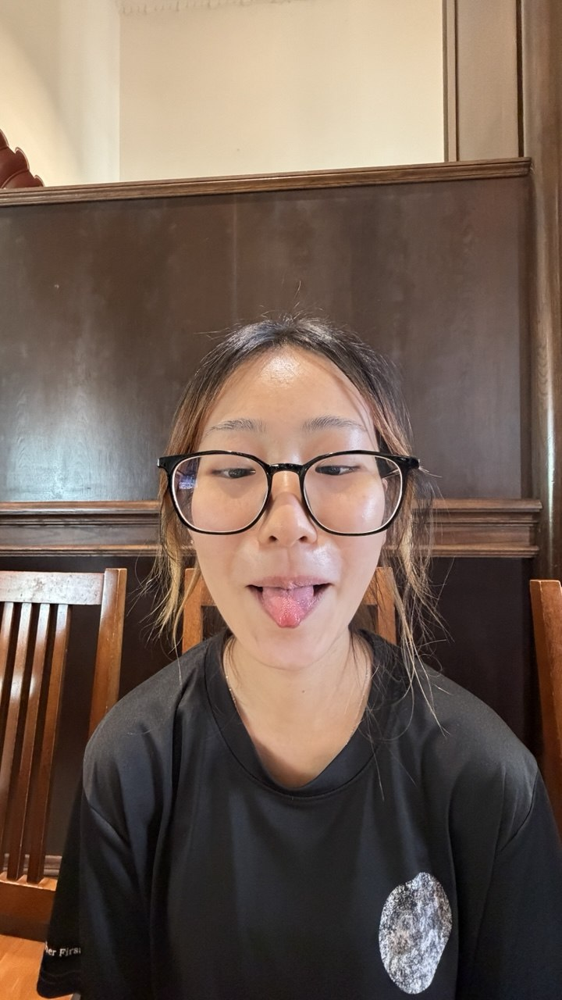
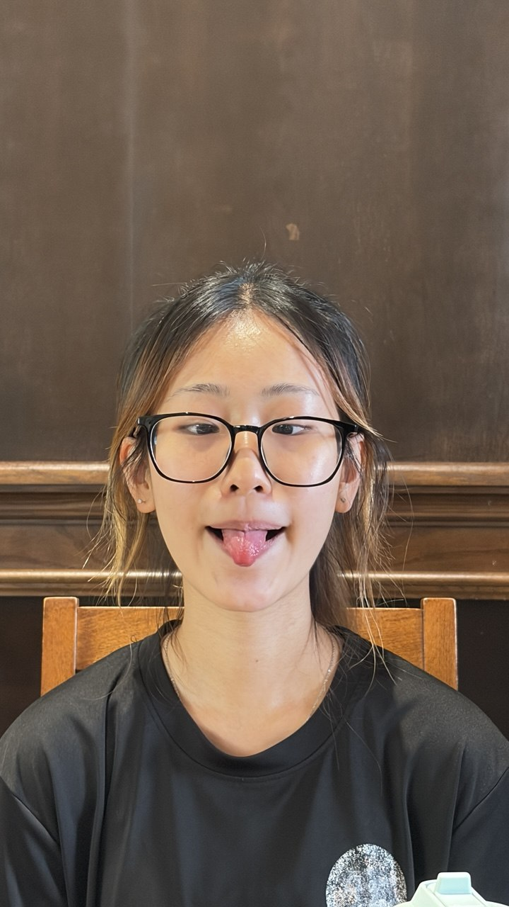
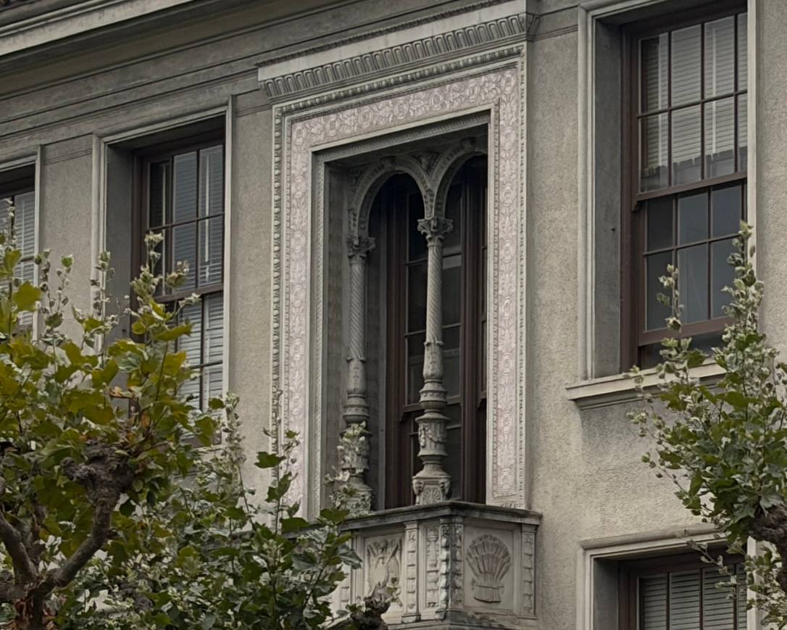
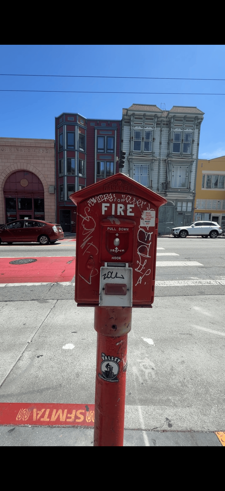

The close-up portrait appears more distorted than what the person actually looks like in rea life because the camera is very close to the subject. Stepping farther away and zooming in changes the perspective and produces a more natural-looking portrait.

The zoomed-in photograph makes the building appear less 3D and more flattened, while the photograph taken closer to the building shows greater perspective differences between the foreground and background.
